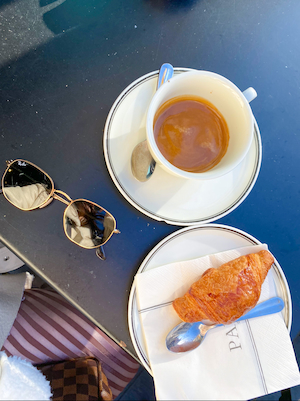
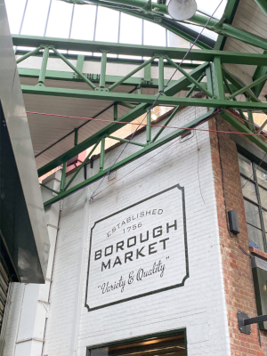
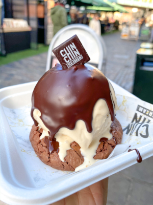
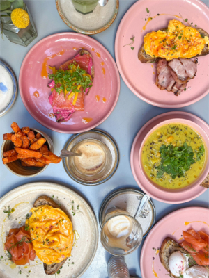

Exploring 7 of London's Delicious Cafés
I’ve posted my picks for London sweets and brunches, but I haven’t talked about my love for London cafés! …
READ MORE6 London Street Markets You Must Visit
While studying abroad in London, I was obsessed with the abundance of street food and markets that are in ...
READ MORE10 of the Best Dessert Spots in London
During my time studying abroad in London I made it a priority to seek out all of the best dessert spots in London ...
READ MOREWeekend in Paris: What to See + Where to Eat

I visited the romantic city of Paris during Valentine's Day weekend in 2020 while studying abroad in London ...
READ MOREMy Guide to the Best Brunch Spots in London
If you’ve read any of my other blog posts, you know I go crazy over brunch! When on vacations and weekends it is …
READ MOREWeekend in Barcelona: What to Eat + See

Barcelona was simply a dream. Up until visiting, I had not fallen so fast and hard in love with a place ...
READ MOREWeekend in Amsterdam: Best Spots to Eat + Drink

Can I just start by saying that Amsterdam is one of the most interesting places I’ve ever been?! The city is the capital of the Netherlands and has many unique …
READ MORE